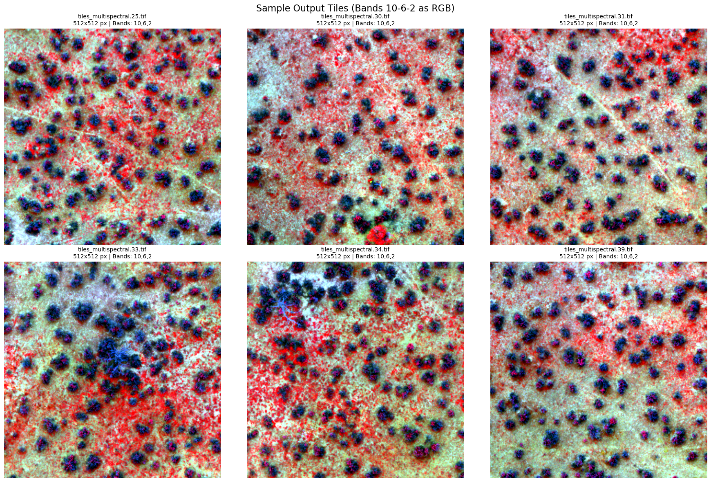

Prepare spatial data for analysis
These guides cover the first five phases of the repository. Each phase describes the required inputs, commands and products; the linked handoff documents contain additional configuration details.
The examples below run locally; this page does not execute processing in the browser. Metadata describes documented inputs, defaults or examples—not values read from your files. Record your own CRS, grids, parameters and outputs. The saved figures retain their original notebook color maps, which may not be accessible to everyone with color-vision deficiencies.
Set up the environment
Run these commands in a terminal, one step at a time. They work in Linux/WSL and Windows PowerShell. Use the same environment for setup and processing.
Copy buttons appear when your browser permits clipboard access; otherwise select the command text manually.
1. Check the prerequisites
Install Git and uv if needed, then check that both are available:
git --versionuv --version2. Get the repository
Clone it once in the directory where you want to keep the project:
git clone https://github.com/LNSOTOM/fvc_structure.gitEnter the repository. If you already cloned it, start here from its parent directory instead.
cd fvc_structure3. Create and check the Python environment
From the repository root, install the locked Python dependencies for Phases 1 and 2. The project requires Python 3.10 or 3.11; uv can obtain a compatible interpreter if needed.
uv syncCheck that Python starts and the processing libraries import:
uv run python --versionuv run python -c "import numpy, rasterio, scipy, skimage, laspy, yaml; print('Dependencies OK')"Continue when the first command reports Python 3.10 or 3.11 and the second prints Dependencies OK.
4. Check PDAL for Phase 1
DSM generation also needs the external pdal executable. Install it separately using the Phase 1 setup guide, then check that it is on the terminal's PATH:
pdal --versionIf the command is not found, install PDAL and verify it again in the same terminal before running Phase 1. Phase 2's scripts do not require the PDAL executable.
Build a digital surface model
Generate a raster of maximum LiDAR elevation using PDAL. The DSM can then be used as the moving surface in Phase 2.
A georeferenced LAS/LAZ point cloud and a writable output location.
A DSM GeoTIFF, optionally accompanied by a STAC sidecar. The example uses a 0.03 m grid.
Processing steps
- Configure the point cloud and DSM output. Diagram: choose input and output paths.
- Estimate the DSM grid, then run PDAL. Diagram: estimate the grid before generating the DSM.
- Inspect the raster and optional metadata.
 Historical DD0011 output; DSM notebook. Select the image to enlarge.
Historical DD0011 output; DSM notebook. Select the image to enlarge.
Repository contents
dsm_lidar.py— DSM generatorconfigs/— job templatenotebooks/— examples and visualisation
1. Configure a job
From the repository root, copy the template and edit its job paths and metadata:
cp phase_1_image_processing/configs/dsm_job.example.yml phase_1_image_processing/configs/dsm_job.local.yml2. Estimate and run
uv run python phase_1_image_processing/dsm_lidar.py --config phase_1_image_processing/configs/dsm_job.local.yml --estimate-onlyuv run python phase_1_image_processing/dsm_lidar.py --config phase_1_image_processing/configs/dsm_job.local.ymlInspect the resulting raster's extent, CRS, resolution and NoData before continuing. The optional sequential batch example in the notebook reads the batch section of the local config; the CLI processes the single job.
Example output: DSM elevation and hillshade
Align LiDAR to the imagery DSM
Resample the LiDAR DSM onto the imagery grid, compute a GeFolki optical-flow field, then apply the field to the original point cloud.
An imagery DSM, a LiDAR DSM and its original georeferenced LAS/LAZ file. Check their CRS and spatial overlap.
A resampled and registered DSM, two flow arrays and an aligned point cloud. The L2 flow script also writes a residual raster.
Processing steps
- Check CRS and configure the site and LiDAR pass. Diagram: verify coordinates and select the pass.
- Resample the LiDAR DSM onto the imagery grid. Diagram: place both surfaces on the same grid.
- Compute optical flow and apply it to the point cloud. Diagram: apply GeFolki displacements.
- Inspect alignment and retained point count.
 Historical DD0001 diagnostic; preprocessing notebook. Select the image to enlarge.
Historical DD0001 diagnostic; preprocessing notebook. Select the image to enlarge.
Repository contents
configs/— job templatestep_0_checks/— CRS checksgefolki/python_myscripts/— processing scriptsgefolki/notebooks/— examples and validationgefolki/python/— vendored GeFolki library
1. Configure one site and pass
cp phase_2_lidar_coregistration/configs/coregistration_job.example.yml phase_2_lidar_coregistration/configs/coregistration_job.local.ymlEdit the preprocess, flow and align sections. Connect the output paths of each step to the input paths of the next. The supplied template uses L2 flow parameters; use the documented L1 parameters for L1 data.
2. Run the steps
This example uses the L2 scripts. For L1 data, choose the corresponding _l1.py scripts instead.
uv run python phase_2_lidar_coregistration/gefolki/python_myscripts/gefolki_preprocess.py --config phase_2_lidar_coregistration/configs/coregistration_job.local.ymluv run python phase_2_lidar_coregistration/gefolki/python_myscripts/gefolki_flow_l2.py --config phase_2_lidar_coregistration/configs/coregistration_job.local.ymluv run python phase_2_lidar_coregistration/gefolki/python_myscripts/align_lidar_with_flow_l2.py --config phase_2_lidar_coregistration/configs/coregistration_job.local.yml3. Inspect the alignment
Review the registered surface, flow direction and alignment statistics for your site. The scripts show diagnostic plots; the validation notebook provides a starting point for further checks.
Example output: DSM and displacement diagnostics
Prepare imagery tiles and structure labels
Clip annotated grid cells, select five multispectral bands and create structure labels using the historical 1 cm to 5 cm workflow.
An orthomosaic, annotated grid, FVC shapefiles and matching 1 cm reference tiles.
Five-band predictor tiles, classified polygons and label rasters at 1 cm and 5 cm.
Processing steps
- Tile the imagery using the annotated grid.

Historical DD0011 raw tiles; tiling notebook. Select the image to enlarge. - Stack the selected multispectral bands. Diagram: select the five predictor bands.
- Classify FVC polygons by structure. Diagram: assign structure IDs to annotations.
- Rasterize labels on the 1 cm reference grid. Diagram: use the matching 1 cm reference tile.
- Downsample labels to 5 cm and remap classes. Diagram: nearest-neighbour resampling and class remapping.
- Run label quality assessment separately.
 Historical DD0001 tile 26 assessment; label QA notebook. Select the image to enlarge.
Historical DD0001 tile 26 assessment; label QA notebook. Select the image to enlarge.

Repository contents
imagery_prep.py— preparation workflowconfigs/— job templatestep_1_orthomosaic_to_tiling/— original tiling examplesstep_2_structure_2D_labels/— original label examplesstep_3_label_quality/— label assessment
1. Set up Phase 3
Phase 3 needs a separate geospatial environment with GDAL, GeoPandas and Rasterio; the Phase 1–2 uv environment does not include them. Follow the Phase 3 setup guide, then activate it in your terminal.
2. Configure a job
From the repository root, copy the template and replace every path. Set the 1 cm reference directory and filename pattern to match your annotation tile IDs. Use new output directories.
cp phase_3_2D_imagery_prep/configs/imagery_prep_job.example.yml phase_3_2D_imagery_prep/configs/imagery_prep_job.local.yml3. Run the workflow
This command runs all five stages in order without pausing. Review the messages, including excluded or unrecognized classes, and inspect the outputs afterwards.
python phase_3_2D_imagery_prep/imagery_prep.py --config phase_3_2D_imagery_prep/configs/imagery_prep_job.local.yml --stage allTo inspect each stage before continuing, replace all in the command with tile, stack, classify, rasterize and downsample, running it once for each in that order. Existing outputs are not overwritten.
Example output: clipped imagery tiles
Example output: label-grid quality
These saved figures retain their original colours, which may not be accessible to everyone with colour-vision deficiencies. They illustrate different sites and do not establish the quality of a new run.
Prepare structure-classified point clouds
Transfer 2D structure labels to a LiDAR tile, calculate height above ground and fuse the labels into a 3D vegetation product.
An already ICP-registered LiDAR tile, matching predictor raster and Phase 3 structure mask.
Mask-classified, ground-only, height-normalized and vegetation-only fused LAS files.
Processing steps
- Check the ICP tile, mask and predictor alignment. Diagram: check CRS, extents and visual alignment.
- Transfer mask classes to the LiDAR points.
 Historical DD0001 example; the mask notebook is configured for tile 109 but may fall back to another tile. Select the image to enlarge.
Historical DD0001 example; the mask notebook is configured for tile 109 but may fall back to another tile. Select the image to enlarge.
- Extract ground points using CSF.
 Historical DD0001 tile 109: the middle panel shows ground classification. See the ground notebook; select the image to enlarge.
Historical DD0001 tile 109: the middle panel shows ground classification. See the ground notebook; select the image to enlarge.
- Calculate height above ground as
Z_norm. Historical DD0001 tile 109 height model; fusion notebook. Select the image to enlarge.
Historical DD0001 tile 109 height model; fusion notebook. Select the image to enlarge.
- Fuse structure labels and assign crown
treeIDs. Diagram: voxel transfer and crown-based refinement. - Inspect the outputs and their alignment. Diagram: check counts, classes, heights and tree IDs.
Repository contents
lidar_prep.py— single-tile workflowconfigs/— job templatestep_1_clipping/— mask transferstep_2_csf_znorm/— ground and height normalizationstep_3_structure_class/— 3D fusion
1. Set up Phase 4
Use a geospatial environment with PDAL, its Python bindings and the other dependencies listed in the Phase 4 setup guide. Activate it before running these commands.
2. Configure a tile
From the repository root, copy the template and replace every path with your own input tile, mask, predictor and new output paths.
cp phase_4_3D_lidar_prep/configs/lidar_prep_job.example.yml phase_4_3D_lidar_prep/configs/lidar_prep_job.local.yml3. Run the workflow
python phase_4_3D_lidar_prep/lidar_prep.py --config phase_4_3D_lidar_prep/configs/lidar_prep_job.local.yml --stage allTo inspect each stage before continuing, replace all with mask, ground, normalize and fuse, running once for each in order. Existing outputs are not overwritten.
Example output: height above ground
The saved figure retains its original colour map; check your own output with accessible visualizations and numerical summaries.
Prepare classified LiDAR for modelling
Convert one Phase 4 tile to local-coordinate PLY, retain its coordinate offset and check its labels before creating a model dataset.
A classified LAS tile with Z_norm and treeID.
A PLY file and an offset sidecar. Dataset splits, model arrays and training are separate steps.
Processing steps
- Inspect the Phase 4 tile and select a class profile.
Diagram: validate classifications,
Z_normandtreeID. - Convert labels and write the PLY. Diagram: the strict HSM profile; the historical profile also retains 64 and 65.
- Keep the offset and check coordinates and labels. Diagram: retain the original CRS separately; check point and class counts.
- Prepare and inspect model data separately.
 Historical DD0001 tile 106 NPY inspection from the export notebook. It is not produced by the PLY command below. Select the image to enlarge.
Historical DD0001 tile 106 NPY inspection from the export notebook. It is not produced by the PLY command below. Select the image to enlarge.
Repository contents
prepare_lidar.py— checked single-tile PLY preparationconfigs/— job templatelidar_preprocessing/— LAS-to-PLY packagenotebooks/— historical exports and quality checksForestFormer3D/— model dataset preparation and experiments
1. Set up Phase 5
Create and activate the separate Python environment described in the Phase 5 handoff. ForestFormer training requires additional dependencies.
2. Configure a tile
Copy the template from the repository root, edit the paths, and choose three_class_hsm or historical_five_class.
cp phase_5_3d_cnn_training/configs/lidar_to_ply.example.yml phase_5_3d_cnn_training/configs/lidar_to_ply.local.yml3. Prepare the PLY
python phase_5_3d_cnn_training/prepare_lidar.py --config phase_5_3d_cnn_training/configs/lidar_to_ply.local.ymlThe command reports excluded background and verifies the PLY, labels, heights and reconstructed coordinates. It refuses to overwrite an existing PLY or offset.
4. Check the three-class model handoff
For HSM tiles, LAS 66/67/68 become PLY 3/4/5. The current ForestFormer exporter maps them to 0/1/2: hummock/shrub/mallee. Verify the dataset, exporter, instance policy and checkpoint before training; the base forest model uses different class meanings. Follow the model experiment runbook for subsequent dataset and training steps.
Example output: model-array inspection
The historical figure retains its original colours, which may not be accessible to everyone with colour-vision deficiencies. Inspect your own classes and coordinates numerically as well.
Next phases
Model training and evaluation are documented in the repository overview and the linked experiment runbooks.